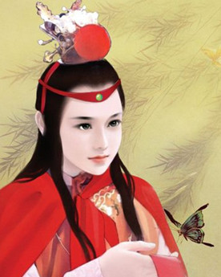

|
人物简介
贾宝玉，《红楼梦》中的男主角。他是女娲补天弃在青埂峰下的一块顽石和赤霞宫神瑛侍者转世真身，荣国府贾政与王夫人所生的次子。因衔玉而诞，系贾府玉字辈嫡孙，故名贾宝玉，贾府通称宝二爷。他是大观园女儿国中唯一的男性居民。
贾宝玉自幼深受贾母疼爱，游于温柔富贵乡，专爱作养脂粉，亲敬家里姐妹和丫鬟；他与林黛玉青梅竹马，互为知己，发展成一段世间少有的纯洁爱情；他重情不重礼，结交了秦钟、柳湘莲、北静王等有情男子；他喜欢诗词曲赋之类性情文学，厌恶四书和八股文，批判程朱理学，把那些追逐科举考试、仕途经济的封建文人叫做“禄蠹”。可是，“瞬息间则又乐极悲生，人非物换”。他所爱的清净女儿们死的死，散的散；自身又在家族安排下糊里糊涂与薛宝钗结婚，致使林黛玉泪尽而逝；再经抄家之痛，越发唬得他疯疯傻傻。为了报答天恩祖德，也为了尽快了却尘缘，他以高魁贵子重振家业。最后情极而毒，悬崖撒手，跟随一僧一道出走，回到青埂峰，“究竟是到头一梦，万境归空”。
谶语词鉴
西江月・（第三回）
无故寻愁觅恨，有时似傻如狂；纵然生得好皮囊，腹内原来草莽。
潦倒不通世务，愚顽怕读文章；行为偏僻性乖张，那管世人诽谤！
富贵不知乐业，贫穷难耐凄凉；可怜辜负好韶光，于国于家无望。
天下无能第一，古今不肖无双；寄言纨�F与膏粱，莫效此儿形状！
爱情悲剧
《红楼梦》里描写的宝黛爱情，并不是什么抽象的异性吸引，而是在他们叛逆思想的发展中描写他们的爱情。
林黛玉比她同时代的一般贵族妇女的思想要高出一筹。她无视“女子无才便是德”的封建道德规范，喜欢读书写诗，表现了出众的才华。她跟贾宝玉一样，最爱读《西厢记》《牡丹亭》等统治者不许看的“邪书”，从中呼吸到新鲜的空气，以致一些曲词烂熟于心，说话时竟不自觉地脱口而出。她爱贾宝玉，从不劝贾宝玉去读书应举、立身扬名。在她身上闻不到一般贵族妇女常有的那种夫贵妻荣的庸俗气味。思想上的一致，对于人生道路的共同的认识和选择，是他们爱情的坚实基础，因此就具有了新的、更加深刻和进步的时代内容。
建立在叛逆思想基础上的宝黛爱情，必然与家族利益发生尖锐的对立，因而为家族统治者所不容。宝黛爱情在封建势力的高压下曲曲折折地发展，最后遭到毁灭。曹雪芹通过生动的艺术描写，在前八十回已经清清楚楚地预示了这个悲剧结局必将到来，现今在市面上流通的一百二十回《红楼梦》的无名氏所续的后四十回虽然将各个人物的性别描写得与原著大相径庭，结局也不尽符合曹雪芹在前80回的隐射，但至少保留了这个结局悲剧。
角色原型
《红楼梦》里面的甄贾两宝玉，即是曹雪芹自己的化身；甄贾两府即是当日曹家的影子。第一，《红楼梦》开端明明说这是一部"将真事隐去"的自叙的书，既然作者是曹雪芹，那么曹雪芹即是《红楼梦》开端时那个深自忏悔的"我"，即是书里的甄贾（真假）两个宝玉的底本；第二，那石头明白清楚的说"这书是我自己的事体情理"，"是我半世亲见亲闻的"；第三，第16回谈论南巡接驾，所说的甄家与贾家都是曹家，康熙帝南巡六次，曹寅当了四次接驾的差，这也是敦敏送他的诗里说的“秦淮旧梦忆繁华”了；第四，《红楼梦》里的贾政，也是次子，也是先不袭爵，也是员外郎，这三层都与曹�\相合，因此贾宝玉即是曹雪芹，即是曹�\之子；第五，《红楼梦》开端便说，作者――即是书中的主人翁――当著书时，已在那穷愁不幸的境地，从敦诚兄弟送曹雪芹的诗里，可以看到曹雪芹是做过繁华旧梦的人，他有美术和文学的天才，能做诗，能绘画，他晚年的境况非常贫穷潦倒，这正是贾宝玉的历史。
|